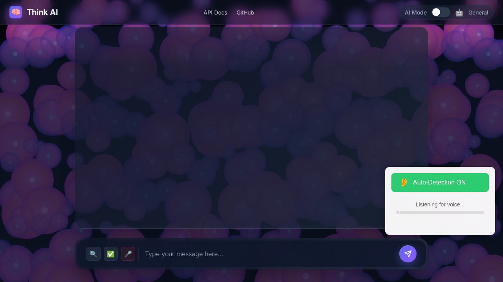
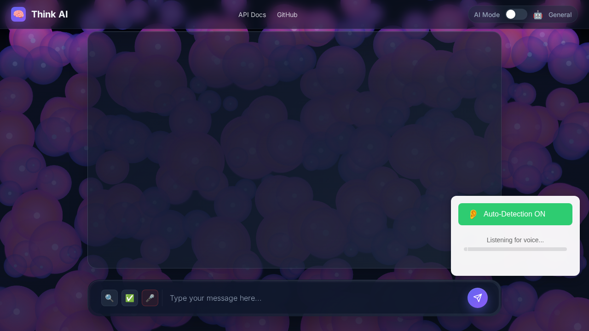
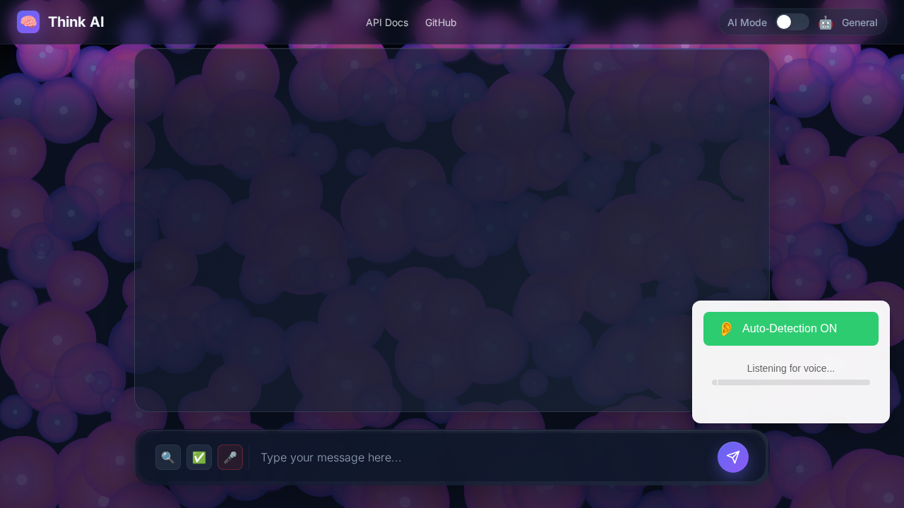
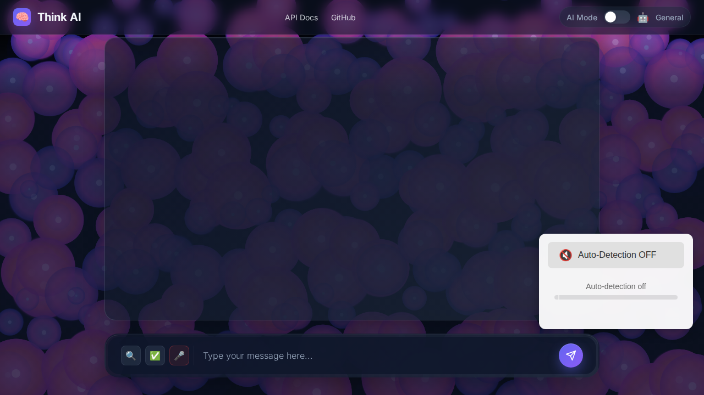

Generated: 2025-07-17T14:25:15.276Z
URL: http://localhost:8080
This test verifies the auto-detect audio functionality including:




| Test | Result | Details |
|---|---|---|
| componentVisible | ✅ PASS | true |
| initialState | ✅ PASS | {
"buttonText": "👂Auto-Detection ON",
"statusText": "Listening for voice...",
"isActive": true
} |
| autoDetectionEnabled | ✅ PASS | {
"buttonText": "👂Auto-Detection ON",
"statusText": "Listening for voice...",
"isActive": true,
"hasAudioLevelBar": true
} |
| audioLevelVisualization | ✅ PASS | {
"barWidth": "0px",
"barBackgroundColor": "rgb(68, 68, 255)",
"thresholdPosition": "6.71875px",
"hasThresholdLine": true
} |
| recordingState | ✅ PASS | {
"hasRecordingIndicator": true,
"isRecordingActive": false,
"hasRecDot": true,
"hasRecText": true,
"recText": "REC",
"statusText": "Listening for voice..."
} |
| apiIntegration | ✅ PASS | {
"endpoint": "/api/audio/transcribe",
"status": 500,
"statusText": "Internal Server Error",
"ok": false
} |
| disabledState | ✅ PASS | {
"buttonText": "🔇Auto-Detection OFF",
"statusText": "Auto-detection off",
"isActive": false
} |
| errorHandling | ❌ FAIL | {
"success": false,
"error": "TypeError",
"message": "Failed to execute 'getUserMedia' on 'MediaDevices': At least one of audio and video must be requested"
} |